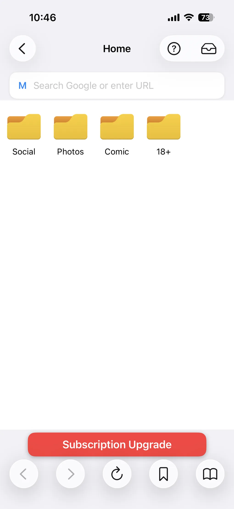
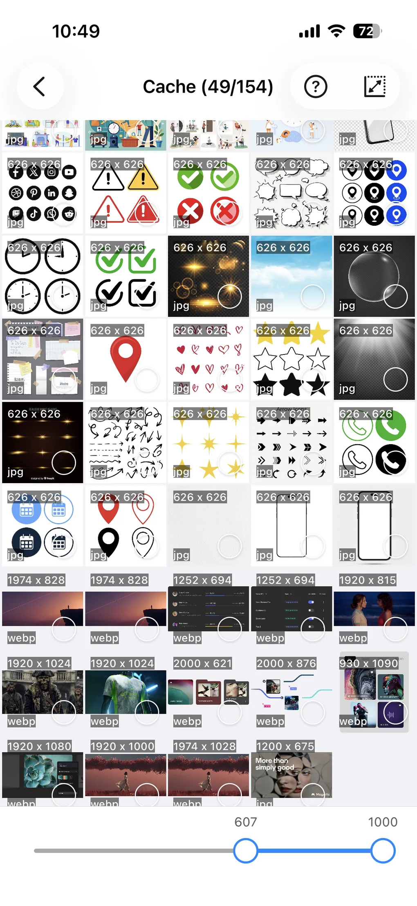
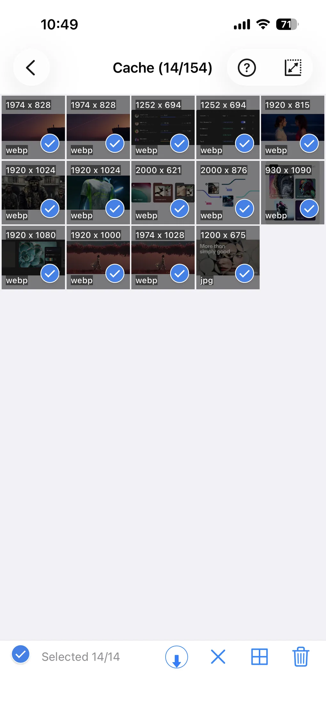

Télécharger des images depuis les galeries de presse et les forums photo
Les galeries photo de la presse et les forums de photographie regorgent d'images qui valent la peine d'être conservées — mais les télécharger une par une est lent et pénible. ImageGet change la donne. Collez une URL et l'app rassemble toutes les images de la page, pour que vous puissiez les parcourir et les télécharger en un geste. Voici comment télécharger des images depuis les galeries de presse et les forums photo, étape par étape.
Téléchargez ImageGet gratuitement — enregistrez les images des galeries de presse et des forums en un geste.
Télécharger ImageGetÉtape 1 : collez l'URL de la galerie ou du forum
Ouvrez ImageGet et collez le lien de la galerie de presse, de l'article ou du fil de forum que vous voulez enregistrer. Vous pouvez copier l'URL depuis n'importe quel navigateur, ou utiliser le navigateur intégré d'ImageGet pour visiter le site directement. ImageGet analyse la page et commence à rassembler les images qu'elle contient.

Étape 2 : rassemblez toutes les images
ImageGet collecte toutes les images de la page — y compris les photos d'une galerie de presse et les images en pleine taille d'un fil de forum, même celles qui se chargent au fil du défilement. Pas besoin de faire un clic droit pour enregistrer chaque image une par une. Si un reportage s'étend sur plusieurs pages, collez chaque URL et laissez ImageGet tout rassembler.

Étape 3 : sélectionnez et téléchargez
Parcourez les images rassemblées dans une grille claire. Touchez une image pour l'afficher en plein écran, puis sélectionnez les photos que vous voulez garder et téléchargez-les dans votre photothèque en un geste. Activez le filtrage intelligent pour ignorer les minuscules vignettes et les avatars, et ne garder que les photos en pleine taille.

Astuces pour enregistrer depuis les galeries et les forums
- Téléchargez une galerie entière — récupérez une galerie de presse complète ou un fil de forum entier en lot, en une seule fois.
- Utilisez le filtrage intelligent — ignorez les vignettes, les avatars et les icônes, et ne gardez que les photos en pleine taille.
- Respectez le droit d'auteur — n'enregistrez que les images que vous avez le droit de conserver, et créditez toujours le photographe d'origine.
FAQ
Puis-je télécharger toute une galerie de presse en une fois ?
Oui — collez l'URL de la galerie et utilisez le mode lot pour télécharger la galerie entière en une seule fois.
Les photos sont-elles téléchargées en pleine qualité ?
Oui — les photos sont enregistrées en pleine résolution, sans compression ni filigrane.
Avec quels sites cela fonctionne-t-il ?
Avec tout site que vous pouvez ouvrir dans un navigateur — galeries de presse, forums de photographie et fils communautaires.
Voir. Enregistrer. Simple.
Téléchargez ImageGet gratuitement et enregistrez les images des galeries de presse et des forums en un geste.
Télécharger ImageGet